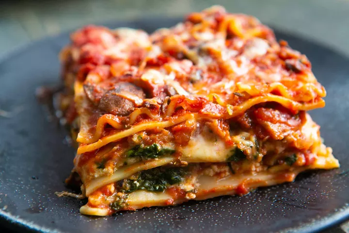

Lasagna

Description
A classic recipe of one of the most loved foods in the world! A homemade lasagna is the ultimate comfort food and perfect for family and friends to gather around the dinner table. Layers of pasta with a rich meat sauce and the perfect amount of cheese!
Ingredients
Meat Sauce:
- 2 teaspoons extra virgin olive oil
- 1 pound ground beef chuck
- 1/2 medium onion, diced
- 1/2 large bell pepper, diced
- 2 clove garlic, minced
- 1 can tomato sauce
- 3 ounces tomato paste
- 1 can crushed tomatoes
- 2 tablespoons fresh oregano, chopped
- 1/4 cup fresh parsley, chopped
- 1 tablespoon Italian seasoning
- 1 pinch garlic powder
- 1 tablespoon red or white wine vinegar
- 1 tablespoon sugar
Assemble:
- 1/2 pound dry lasagna sheets
- 15 ounces ricotta cheese
- 1 1/2 pounds mozarella cheese, grated or sliced
- 1/4 pound parmesan cheese, grated
Steps
Meat sauce:
- Boil a large pot of salted water on high heat. Prepare the sauce in the next steps while the water is heating.
- In a large skillet, heat the olive oil on medium high heat. Add the ground beef and cook until lightly browned. Remove the beef to a bowl and drain off all but a tablespoon of fat.
- Add the diced bell pepper and onions to the same skillet. Cook for 4 to 5 minutes, then add the minced garlic and cook for another minute.
- Return the browned ground beef to the skillet. Stir to combine, reduce the heat to low and cook for another 5 minutes.
- Transfer the beef mixture to a medium sized pot. Add the crushed tomatoes, tomato sauce and tomato paste to the pot.
- Add the parsley, oregano and Italian seasonings, adjusting the amounts to taste. Sprinkle some garlic powder to taste.
- Add the red or white wine vinegar and sugar to taste.
- Bring the sauce to a simmer and then lower the heat to maintain a low simmer. Cook for 15 to 45 minutes, stirring often. Scrape the bottom of the pot every so often so nothing sticks to the bottom and scorches.
- When the salted water has boiled, add the dry lasagna sheets and cook them per package directions.
- When ready, drain the lasagna sheets and rinse with cool water.
Assemble:
- Preheat the oven to 375℉.
- In a casserole or lasagna dish, spread a cup of sauce over the base, then cover with lasagna sheets.
- Spread another cup of sauce over the sheets and sprinkle some grated mozarella, parmesan and ricotta cheese.
- Apply second layer of lasagna sheets, and top it with some sauce, mozarella, parmesan and ricotta cheese again.
- Finish with another layer of lasagna sheets, spread the remaining sauce over the sheets and sprinkle some mozarella cheese.
- Bake for 30 to 40 minutes or until golden and bubbling.
- Stand for 5 to 10 minutes before cutting and serving.